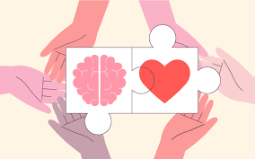
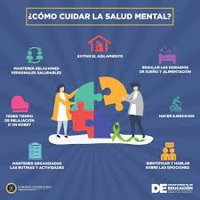

Técnicas para mejorar la concentración de los estudiantes
Crea una rutina de estudio: Establecer un horario fijo mejora el rendimiento y evita estudiar cuando el cansancio afecta.
Mantén alejadas las distracciones: Prepara tu espacio de estudio sin elementos que te distraigan.
Huye de la memorización literal: Relaciona la información con experiencias personales y reformúlala.
Practica constantemente: Evalúate con exámenes o cuestionarios.

Recomendaciones para lidiar con la presión académica
No agoblarse, positividad ante todo: Mantén una actitud positiva ante los retos académicos.
Tomar descansos regularmente: Organízate para evitar saturarte y relajar la mente.
Elegir un lugar adecuado para estudiar: Estudiar en un ambiente tranquilo mejora la concentración.
Consejos Generales
Dormir lo suficiente: Refuerza los conocimientos y mejora el rendimiento.
Comer de manera equilibrada y hacer ejercicio: Mejora el rendimiento académico y reduce el estrés.
